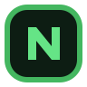

Контент
Разделение модов, модпаков, шейдеров и ресурспаков
Лаунчер определяет тип проекта и устанавливает файлы в правильные папки выбранной сборки. Это помогает избежать смешивания модов, шейдеров и ресурспаков в одном месте.

Nexus Launcher Minecraft desktop appЛаунчер для Windows: создание сборок, установка модов, шейдеров и ресурспаков, настройка RAM и Java, запуск Minecraft и отображение активности в Discord.
Nexus Launcher объединяет управление сборками, установку контента, настройки запуска и релизные версии приложения для Windows.
Создание отдельных Minecraft-сборок с собственной версией игры, loader, RAM, Java и папками.
Поиск и установка модов, модпаков, шейдеров и ресурспаков из каталога Modrinth.
Отображение статуса в Discord: пользователь находится в лаунчере или играет через Nexus.
Вход через Ely.by OAuth (PKCE), обновление токена перед запуском и authlib-injector для скина в игре.
Несколько полноэкранных тем оформления: тёмная, AMOLED, лесная, океанская, фиолетовая и закатная.
Поддержка Windows EXE, installer, portable ZIP и SHA256-файлов в GitHub Releases.
Лаунчер определяет тип проекта и устанавливает файлы в правильные папки выбранной сборки. Это помогает избежать смешивания модов, шейдеров и ресурспаков в одном месте.
Выбирается версия Minecraft, loader, название сборки и параметры запуска.
Моды, шейдеры, ресурспаки и модпаки устанавливаются через каталог лаунчера.
Nexus запускает Minecraft с выбранными настройками RAM, Java и разрешения окна.
Улучшение сайта, страниц загрузки, описания функций и визуальной структуры проекта.
Deep QA, выбор версии loader, retry API, валидация сборок и headless-проверка UI.
Финальная полировка лаунчера, updater, релизных сборок и сайта проекта.
OAuth Ely.by, полноэкранные темы, CustomSkinLoader, адаптивный профиль и прогресс запуска.
Усиленная прокрутка как в Windows, Ely.by OAuth и обновление сайта.
Адаптация свернутой панели, объёмный preview скина и обновление релизных артефактов.
Текущая версия